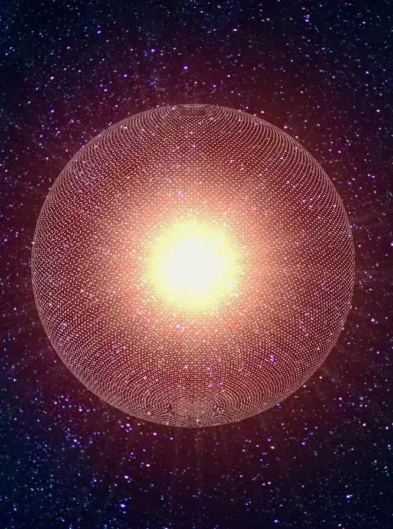
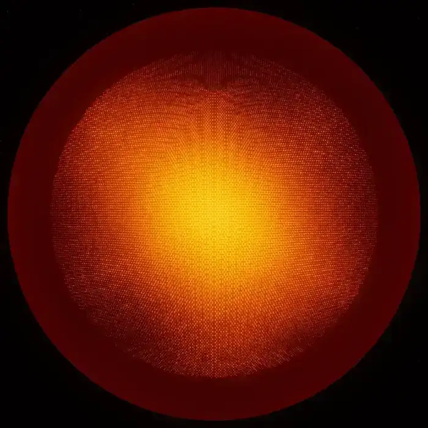

The idea
In a 1960 paper, Freeman Dyson pointed out that a technological civilisation's energy use would eventually be limited only by its star, and that the waste heat from that use would be reradiated in the infrared. He proposed looking for stars with an anomalous infrared excess. The 'sphere' was never meant as a solid shell — Dyson himself said a swarm of collectors was the plausible form.
Maps, diagrams and images





What the searches find
Infrared surveys do turn up stars with excess infrared. The problem is that dust around young stars, debris discs and circumstellar material produce the same signature, and are vastly more common. Every candidate so far has resolved into dust or an instrumental artefact when examined.
The most famous case, Tabby's star (KIC 8462852), dimmed irregularly in a way that prompted megastructure speculation in 2015. Follow-up photometry and spectroscopy found dust — uneven, clumpy, orbiting — and the explanation settled there. A 2024 search of five million sources produced seven candidates worth a closer look, which is where the field stands: candidates, no confirmations.
Documented: the detection method works — infrared excess is measurable.
Documented: dust produces the same signature and is common.
Not confirmed: a single megastructure candidate.
Not excluded: their existence; the searches are young and incomplete.
The honest label: live debate — a serious observational programme with null results so far, which is not the same as a debunked idea.
Why it is in the archive
Because it is the archive's best example of a fringe-sounding idea that produced a real observational field: the searches for infrared excess are now standard practice, whatever one thinks of the motive.
Open resources on this topic
- PapersOpen-access articles: DOAJ · PubMed Central · Internet Archive Scholar
- BooksPublic-domain and borrowable copies: Open Library · Project Gutenberg · Google Books · Internet Archive
Cite this page
Momin, S. (2026). Dyson Spheres. The Larger World Archive. https://drsamonline.github.io/LARGE_GLOBE/dyson-spheres.htmlMomin, Sohil. “Dyson Spheres.” The Larger World Archive, 2026, https://drsamonline.github.io/LARGE_GLOBE/dyson-spheres.html.Momin, Sohil. “Dyson Spheres.” The Larger World Archive, 2026. https://drsamonline.github.io/LARGE_GLOBE/dyson-spheres.html.@misc{dyson2026dyson,
author = {Momin, Sohil},
title = {Dyson Spheres},
year = {2026},
howpublished = {The Larger World Archive},
url = {https://drsamonline.github.io/LARGE_GLOBE/dyson-spheres.html},
note = {Last reviewed 20 November 2026}
}Last reviewed 20 November 2026 · Corrections policy · this page is not peer reviewed
Sources for this page
- Wikipedia, “Dyson sphere” — the idea, its variants and the searchesen.wikipedia.org
- Wikipedia, “Tabby's Star” — the case that made it famousen.wikipedia.org
- Wikipedia, “Infrared excess” — the observable signatureen.wikipedia.org
- Wikipedia, “Circumstellar dust” — the ordinary explanationen.wikipedia.org